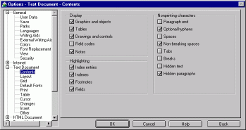
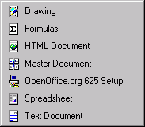
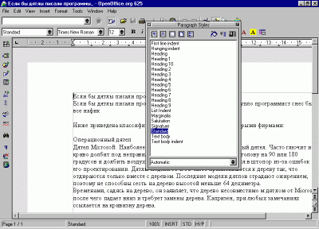
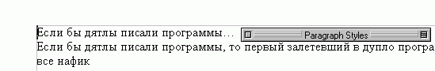
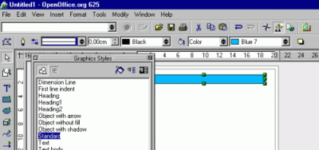

Временами каждому из нас бывает необходимо состряпать
какой-то документ, хорошо отформатировать его, украсить финтифлюшками (типа
красивой шапки) и распечатать на бумажке. А иной раз требуется воспользоваться
эл. таблицами для "сведения баланса". Можно, конечно, набить документ в WordPad
или в HTML-редакторе, а для расчета таблички накорябать программу на Бейсике.
Некоторые так и поступают. Но вот от одной вещи уйти не
удается. Ваши респонденты предпочитают пользоваться офисными пакетами, и фик вы
их заставите перейти на вашу технологию. Так что, как ни крути, без офисного
пакета вам не обойтись. Если нет желания платить
достаточно большие деньги за ожиревший пакет MS Office, норовящий отхватить
пол-диска под свои нужды, то имеет сысл обратить внимание на альтернативные
пакеты. Про 602 Pro PC я уже говорил, поэтому попробуем на вкус более тяжелую
"артиллерию" - Open Office.
Установка По сравнению с MS Office, занимающим
не меньше компакта, OpenOffice кажется жутко маленьким - всего 80 мегов. Сама
процедура установки приятная, стильная и весьма дружественная. Рекомендуется,
кстати, выбирая компонент, посмотреть, для чего он предназначен, потому что
раскладка компонентов другая, чем в MS Office. И не забывайте про Java, иначе
Help вам будет только сниться (хотя без Java сам OpenOffice может обходиться).
Первый запуск

Как стартует MS Office, мы все знаем.
Медленно, потому как жирный. В отличие от него, OpenOffice стартует так же
быстро, как крокодил, залезающий на дерево. Почему такое происходит, я объясню
чуть позже. Первым пунктом, открывающим наше турне будет
настройка пакета. В отличие от MS Office, где в настройках можно элементарно
запутаться, а некоторые пункты обнаруживаются совсем не там, где мы их ожидали
найти, в OpenOffice все логично раскидано по полочкам, точнее - по
иерархическому дереву, а галочки можно ставить справа от дерева. Весьма удобно.
Главное - не забыть выставить русский язык, а то будете писать и читать
крокозяблами. Особого усердия в настройке лучше не
проявлять - ключей много, хватит надолго. Заниматься их подбором лучше
постепенно, по мере надобности. Кстати, можно выбрать себе Маковский интерфейс
для диалогов, с ним удобнее работать. Настройка сделана?
Перезапускаемся (чтобы русский нормально работал) и - в путь!
Чего нам дали?

Ну как что? Офисный пакет с несколькими
программами. Программы, по списку, у нас такие: Drawing, Formulas, HTML
Document, Master Document, Setup, Spreadsheet, Text Document.
Setup - программа установки. Можно: убирать
ненужные компоненты и добавлять нужные (хотя, по большому счету, об этом нужно
думать заранее), вытирать OpenOffice напрочь, восстанавливать поврежденные
компоненты (немногие установщики могут этим похвастаться).
Formulas - программа для вбивания в компьютер
всяких разных математических (да и не только) формул, включая многоэтажные.
Принцип такой: вы вводите строчку формулы в специальном окошке (используя
специальное форматирование), а сама формула в шикарном виде появляется на
главном листе программы.

Text Document - Текстовый
процессор, по своей навернутости в части реализации всяческих фукций вполне
может соперничать с MS Word. Тот факт, что Ворд все-таки более навернутый, ни о
чем не говорит, потому что нормальный пользователь, не испытывающий тяги к
извращениям, пользуется от силы 20% от всех заложенных в него функций.
Несомненный плюс текстового редактора Open Office (да и всех программ, входящих
в пакет) - это плавающие панельки на экране, на порядок более удобные, чем в MS
Office. Если в данный момент какая-то панелька не нужна, ее можно свернуть и
задвинуть подальше (или убрать вообще, хотя до этого редко кто доходит). Надо
сказать, что работать в этом текстовом процессоре мне почему-то удобнее, чем в
MS Office. Чем-то он более friendly, но это - уже субъективное.
HTML Document - текстовый процессор для
HTML-документов. Хотя, я почему-то не вижу особых отличий от обычного текстового
процессора. И там и здесь можно отредактировать все, что угодно. Как я понимаю,
этот редактор просто чуть больше ориентирован на Веб, только и всего.

Кстати,
рекомендую ознакомиться со списком типов файлов в диалоге "Open file". Можно
узнать много нового. Вордовские документы Open Office кушает вполне прилично, но
сохраняться всегда предлагает в своем формате. Если у вас на диске просто залежи
документов, то имеет смысл прислушаться к этому совету, потому что документы
Open Office меньше по размеру, чем те, что создает MS Office.
Особый прикол - это скриптописание (ну, или
макросописание) на StarBasic. Только вот жалко, что нет возможности посмотреть
исходный текст предустановленных макросов. Spreadsheet - электронные таблицы. Чего-то особенного в них я не заметил,
хотя работать в них удобнее, чем в MS Excel. Менее дурацкие диалоги и
автопилоты, а функциональность не хуже. Мало того, именно в этой программе я
оценил левую полоску с инструментами. "Ей там к лицу".

Drawing - программа-"рисовалка". Берем лист бумаги нужного нам формата и
начинаем вставлять туда графические объекты. Очень хорошо, что все свойства
объекта под рукой, плюс плавающие панельки. Мне понравилось, много чего нужного
делается простым кликом мышки, без залезания в дебри. Master Document - программа-"сводник". Сводит много мелких документов в
один, но большой. Таким образом, можно раскидать один документ на несколько
человек, а потом быстро свести все вместе. Надо сказать,
что все программы Open Office жутко похожи друг на друга, отличия появляются в
том, что каждая из программ ставит на панель управления свои, специфические для
нее инструменты. Но общая идеология работы с пакетом от этого не меняется. И это
важно!
Взгляд изнутри В отличие от некоторых других
Офисов, Open Office сделан не одним большим куском, а большим количеством
мелких. Основной минус такого решения - долгая загрузка, от двух до пяти минут.
Все остальное - плюсы. В память грузятся только те модули, которые реально нужны
для работы, поэтому тормозов во время работы не ощущается. Есть большое
подозрение, что Open Office с такой же скоростью будет работать и на 16 мегах
памяти, когда MS Office-2000 норовит уйти в тотальный свопинг.
А сервис-паки будут иметь маленький размер. Всего лишь
поменять пару DLL. Немного о фатальных ошибках. Если
вдруг у него начинает колбасить код в нутрях, идиотского сообщения о том, что
"программа выполнила нелегальную операцию и будет застрелена" не возникает.
OpenOffice сохраняет несохраненный документ и тактично сообщает о том, то "враги
проникли в родную хату", поэтому он сейчас кувыркнется. После перезапуска не
надо разыскивать документы по окраинам временных файлов (как в MS Office),
OpenOffice сам спросит "Будем восстанавливать документ или ну его нафик?".
Не нравится мне в нем вот какая вещь - диалоги
открытия/сохранения документов. Я так понимаю, что разработчики никак не думали,
что я буду хранить документы по всему диску, а не в одном каталоге, поэтому
операция открытия файла смахивает на турне по дискам и каталогам (и
действительно, чего они поленились добавить в диалог выкидной список для быстрой
навигации).
Кстати, особо любопытные могут загрузить
себе исходные тексты.